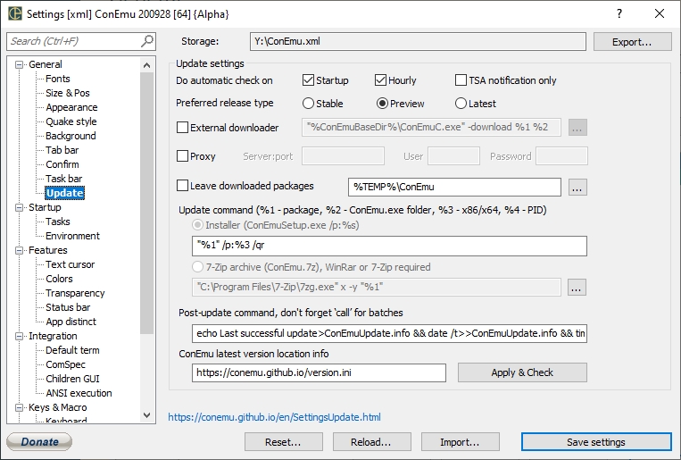

Settings: Update

Update settings
Check on startup
Hourly
Show TSA balloon
Use proxy
Server:port
User
Password
Download path
Leave downloaded packages
Update command (%1 - package, %2 - ConEmu.exe folder, %3 - x86/x64, %4 - PID)
- Installer (ConEmuSetup.exe)
- 7-Zip archieve (ConEmu.7z), WinRar or 7-Zip required
Post-update command, don't forget ‘call’ for batches
ConEmu latest version location info